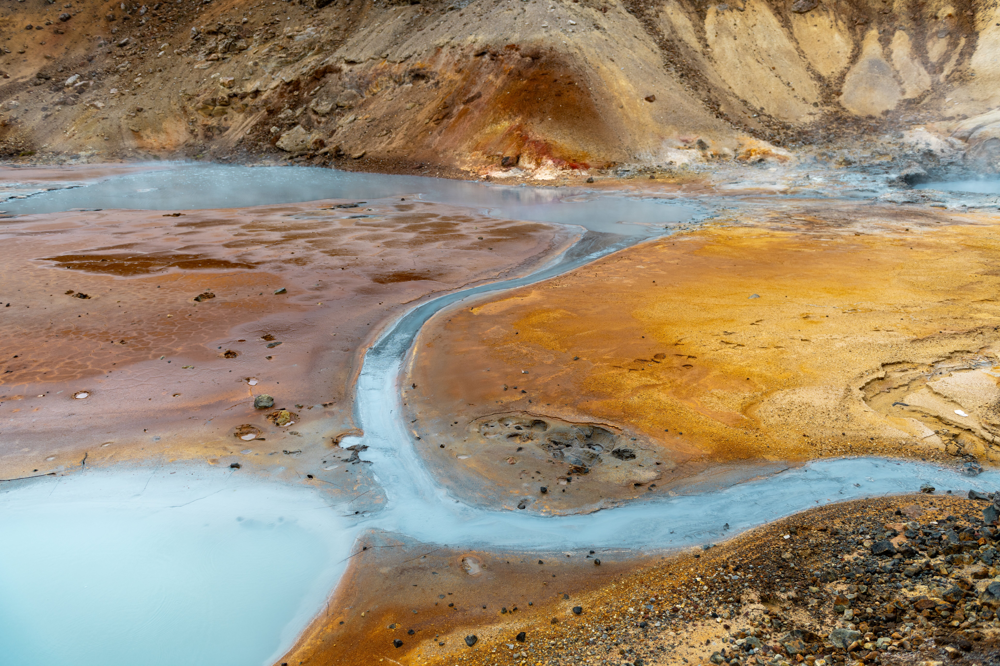
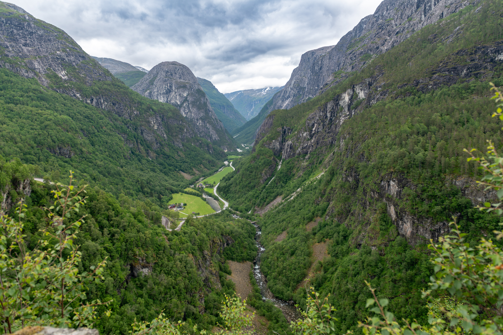
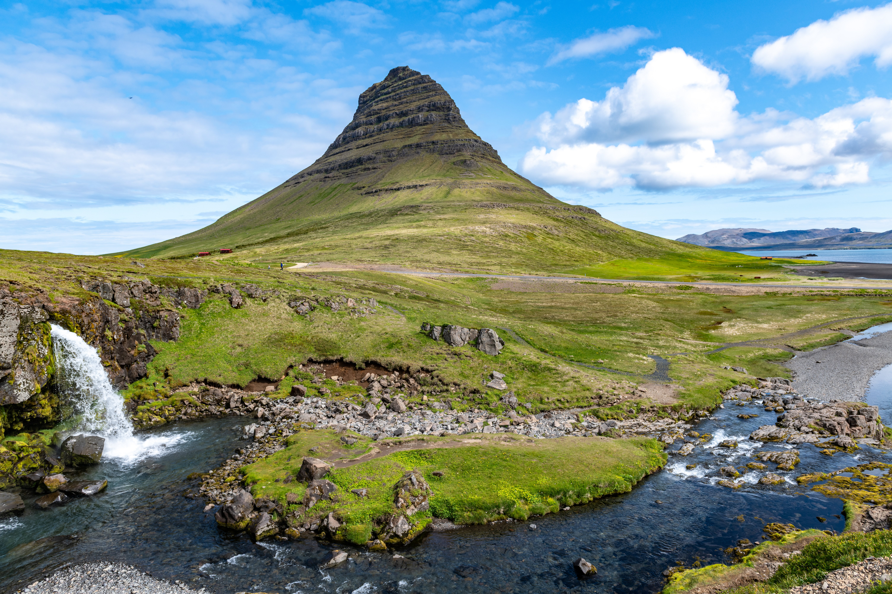
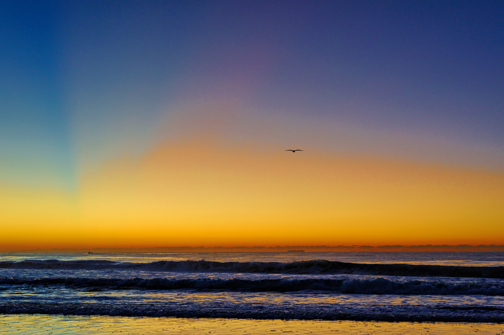

Photography Archive
Misztal Images is a personal photography archive featuring landscape, travel, digital and 35mm film photography from Australia and abroad.

The work is shaped by observation, place, memory and the simple act of carrying a camera — from full-frame digital bodies to older cameras, 35mm film and scanned negatives.
Selected Collections
A simple selection of travel, landscape, local and archive photography.

Fjords, coastlines, weather and northern light from travels through Norway.

Volcanic landscapes, waterfalls, weather and changing light.

Beaches, ocean pools, escarpment light and familiar local places.
Older images, scanned photographs, experiments and photographs outside the main collections.
Cameras & Process
The cameras are part of the process rather than the subject of the work. Each one has contributed to the archive in a different way — from detailed landscape files to older digital images, 35mm film and scanned negatives.
Main digital body for landscape, travel and detailed image work.
Full-frame digital camera for travel, available light and general photography.
Older full-frame digital body with a distinctive, enduring image quality.
Part of the earlier digital archive and photographic learning process.
35mm film camera used for slower, more deliberate image making.
Used to bring negatives and older film images into the digital archive.
About
Misztal Images began as a way to bring photographs out of hard drives, negative sleeves and old folders, and into a more considered space.
Read my storyContact
For print enquiries, image use, collaborations or general contact, please email:
hello@misztalimages.com